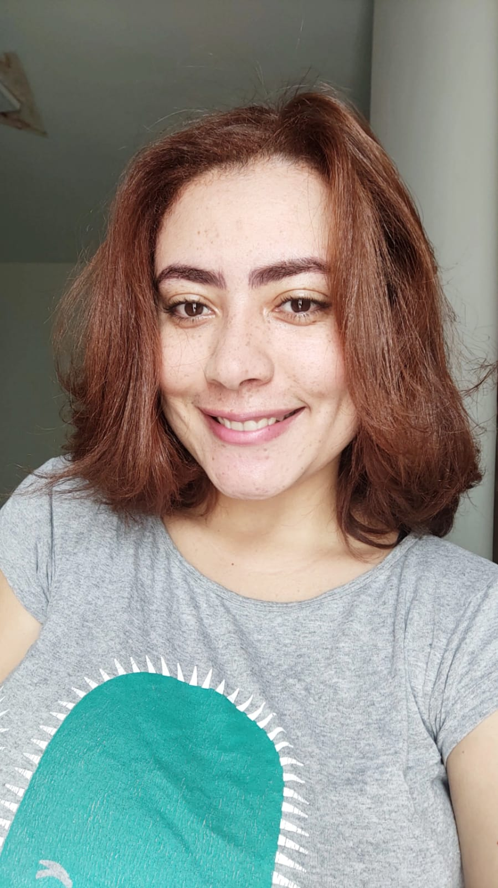

https://github.com/marilinhas
https://github.com/marilinhasMARÍLIA PEREIRA DOS SANTOS
GRADUANDA EM ENGENHARIA SANITÁRIA E AMBIENTAL

Me chamo Marília Pereira dos Santos, estudante de Engenharia Sanitária e Ambiental na UFBA. Disponho de uma ótima comunicação, iniciativa e agilidade de aprendizado. Dentre minhas habilidades, estão:criatividade, proatividade resiliência e bom trabalho em equipe.
COMPETÊNCIAS
Inglês (Intermediário)
Python Intermediário
Google Docs
Pacote Office Intermediário
Canva
OBJETIVO
Estágio na área de Engenharia, foco em Engenharia Sanitária e Ambiental.
CONTATO
(73)99155-6486
https://github.com/marilinhas
 marilinhas18@gmail.com
marilinhas18@gmail.com
 https://www.linkedin.com/in/marília-santosesa95/
https://www.linkedin.com/in/marília-santosesa95/